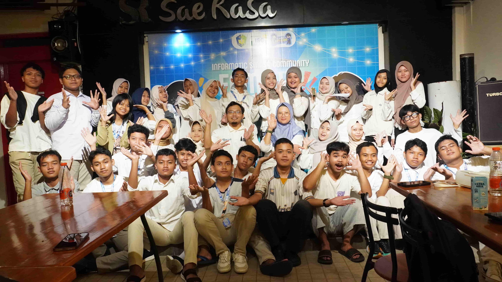

Menjadi organisasi yang adaptif, inovatif, dan unggul dalam membangun komunitas yang berkelanjutan di era digital.

Bikin momen berharga berhenti di satu jepretan. Tugasnya ngatur angle, lighting, dan komposisi biar visualnya kelihatan dapet vibes-nya!
Nyulap ide, foto, dan teks jadi konten visual yang aesthetic, eye-catching, dan punya palette warna yang ciamik buat narik perhatian! 🎨🔥
Otak di balik narasi dan cerita. Tugasnya riset, wawancara, dan nulis artikel atau caption yang akurat, padat, dan engaging! 🧠📚
Bikin website yang estetis dan user-friendly. Mastiin semua info, foto, dan desain tertata rapi plus nyaman diakses dari HP! 💻✨